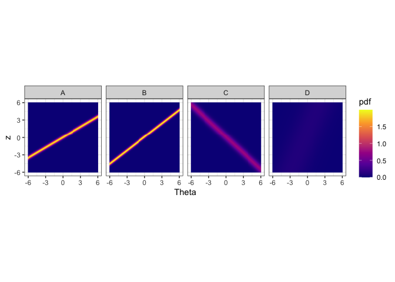
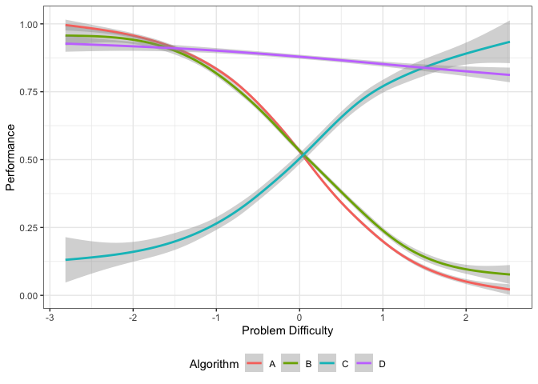
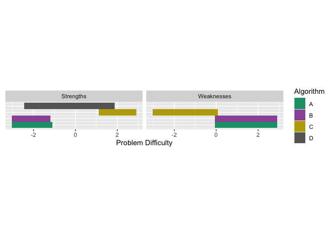

The goal of airt is to evaluate a portfolio of algorithms using Item Response Theory (IRT). To fit the IRT models, I have used the R packages mirt and EstCRM.
Installation
You can install the released version of airt from CRAN with:
install.packages("airt")You can install the development version from GitHub with:
# install.packages("devtools")
devtools::install_github("sevvandi/airt")Example - continuous
Let us consider some synthetic performance data. For this example, I will generate performance values for 4 algorithms that are correlated with each other.
library(airt)
library(ggplot2)
library(gridExtra)
set.seed(1)
algo1 <- runif(200)
algo2 <- 2*algo1 + rnorm(200, mean=0, sd=0.1)
algo2 <- (algo2 - min(algo2))/(max(algo2) - min(algo2))
algo3 <- 1 - algo1 + rnorm(200, mean=0, sd=0.1)
algo3 <- (algo3 - min(algo3))/(max(algo3) - min(algo3))
algo4 <- 2 + 0.2*algo1 + rnorm(200, mean=0, sd=0.1)
algo4 <- algo4/max(algo4)
df <- cbind.data.frame(algo1, algo2, algo3, algo4)
colnames(df) <- c("A", "B", "C", "D")
head(df)
#> A B C D
#> 1 0.2655087 0.2726160 0.7842857 0.8640853
#> 2 0.3721239 0.3988125 0.5474863 0.8573372
#> 3 0.5728534 0.5370545 0.6271255 0.8370052
#> 4 0.9082078 0.8881757 0.1776022 0.9152130
#> 5 0.2016819 0.2134300 0.8944309 0.8970685
#> 6 0.8983897 0.9519739 0.3346240 0.9807495This dataframe gives the performances of algorithms A, B, C and D. Each row is an dataset/instance and each column denotes an algorithm. Let us fit a continuous IRT model to this data. The input to the airt model is the dataframe df.
modout <- cirtmodel(df)
paras <- modout$model$param
paras
#> a b alpha
#> A 2.8527066 -0.05943140 1.6853860
#> B 3.8607317 -0.12775543 1.2914311
#> C -1.7297386 0.09323845 -1.0843468
#> D 0.5348669 -0.46017926 0.4229044Now we have our AIRT model. The paras contain the standard IRT parameters from the EstCRM R package. Here a denotes discrimination, b difficulty and alpha the scaling parameter. From these parameters we construct algorithm attributes/features. They are anomalousness, consistency (or stability) and difficulty limit. These are AIRT algorithm attributes and are available in the output modout.
cbind.data.frame(modout$anomalous, modout$stability, modout$difficulty_limit)
#> modout$anomalous modout$stability modout$difficulty_limit
#> A 0 0.3505443 0.05943140
#> B 0 0.2590183 0.12775543
#> C 1 0.5781220 -0.09323845
#> D 0 1.8696240 0.46017926The anomalous feature is either 1 or 0. If it is 1, the algorithm is anomalous and if it is 0, it is not. We can see that algorithm C is anomalous. That is, it performs well for difficult datasets/problems and poorly for easy datasets/problems. The other algorithm perform in a normal way, they gives good performances for easy problems and poor performances for difficult problems.
The difficultly limit tells us the highest difficulty level the algorithm can handle. If an algorithm has a high difficulty limit, it is good because, then it can handle very hard problems. In this case, Algorithm D has the highest difficulty limit. Thus, it can handle very difficult problems. Also observe that C has a negative difficulty limit. This is because it is anomalous.
The stability/consistency feature tells us how consistent an algorithm is. Some algorithms are consistently good for many problems and some are consistently poor. Others can vary a lot depending on the problem. Algorithm D has the highest consistency in the portfolio. That means, it is consistently good or consistently bad. Because its difficulty limit is very high, we know it is consistently good. But we can’t say it by just looking at the stability/consistency value. In this portfolio, the least consistent algorithm is A. That is, it fluctuates a lot depending on the problem.
By plotting heatmaps we can visually see these characteristics.
obj <- heatmaps_crm(modout) #, thetarange = c(-8, -2)
autoplot(obj,nrow = 1)
The figure above shows the probability density heatmaps for algorithms. The y axis denotes the normalized performance values. The x axis gives the problem easiness. Lower x/Theta values denote more difficult problems and higher Theta values denote easier problems. For algorithm A, B and C we see lines across the panes. These lines denote high density regions. Let’s say we look at Theta = 0 for algorithm A. The place where the yellow line intersects Theta = 0 (vertical line, not drawn) is the highest probable region. That denotes the the most probably performance for that type of problem. Generally, sharper lines indicate more discriminating algorithms and blurry lines or no lines (algorithm D) indicate more stable algorithms. If the line has a positive slope, then it is not anomalous. If the line has a negative slope (algorithm C), then it is anomalous.
We see that algorithms A and B obtain high performance values for high Theta values. That is because these algorithms are normal, i.e., not anomalous. However, algorithm C obtains high performance values for low Theta values. These are difficult datasets. Hence, algorithm C is anomalous. Algorithm D, does not discriminate among the datasets, as such it is a more consistent algorithm. These are the insights we can get from the heatmaps.
Next, let’s do a latent trait analysis. Latent trait analysis looks at the algorithm performance with respect to the dataset difficulty. The datasets are ordered in the latent trait according to their difficulty. IRT does this for us. Let’s look at the latent trait.
obj <- latent_trait_analysis(df, modout$model$param, epsilon = 0 )
#> Warning: The `x` argument of `as_tibble.matrix()` must have unique column names if
#> `.name_repair` is omitted as of tibble 2.0.0.
#> ℹ Using compatibility `.name_repair`.
#> ℹ The deprecated feature was likely used in the airt package.
#> Please report the issue to the authors.
#> This warning is displayed once every 8 hours.
#> Call `lifecycle::last_lifecycle_warnings()` to see where this warning was
#> generated.
#> Joining with `by = join_by(group)`
#> Joining with `by = join_by(group)`
autoplot(obj, plottype = 1)
The figure above shows the performance of the 4 algorithms on different datasets ordered by dataset difficulty. Again, we see that the performance of algorithms A and B decrease with dataset difficulty while the performance of algorithm C increases with dataset difficulty. Even though the performance of Algorithm D somewhat decreases with dataset difficulty it is very consistent. We can plot it by algorithm (if the portfolio has lots of algorithms) by using plottype = 2.
autoplot(obj, plottype = 2) From the plots above we can see that different algorithms perform well for different problem difficulties. That is, different algorithms have different strengths. Well, different weaknesses as well. To properly, quantify the strengths and weaknesses, we first fit smoothing splines to the data above. We can do this by using plottype = 3.
From the plots above we can see that different algorithms perform well for different problem difficulties. That is, different algorithms have different strengths. Well, different weaknesses as well. To properly, quantify the strengths and weaknesses, we first fit smoothing splines to the data above. We can do this by using plottype = 3.
autoplot(obj, plottype = 3) This plot shows the smoothing splines for each algorithm as a function of the problem difficulty. From this figure, we can get the best algorithm for a given problem difficulty. Algorithm C is best for difficult datasets, while algorithm D dominates the middle of the spectrum. Algorithm A is better for easy datasets.
We can also compute the proportion of the latent trait spectrum occupied by each algorithm. We call this the latent trait occupancy (LTO).
obj$strengths$proportions
#> # A tibble: 3 × 4
#> group Proportion algorithm colour
#> <dbl> <dbl> <chr> <chr>
#> 1 4 0.855 D #C77CFF
#> 2 3 0.075 C #00BFC4
#> 3 1 0.07 A #F8766DIn the above table LTO is given by the Proportion column. We see that algorithms D, A, C and D occupy 0.865, 0.070 and 0.0.065 of the latent trait respectively.
Just like the strengths, we can look at the weaknesses. An algorithm is weak for a given problem difficulty, if the associated curve is at the bottom. From the graph above we see that Algorithm C is weak for easy problems, and Algorithm A is weak for difficulty problems. We can get latent trait occupancy (LTO) for weaknesses as well.
obj$weakness$proportions
#> # A tibble: 2 × 4
#> group Proportion algorithm colour
#> <dbl> <dbl> <chr> <chr>
#> 1 1 0.52 A #F8766D
#> 2 3 0.48 C #00BFC4We can put these in a strengths and weaknesses diagram by using plottype = 4.
autoplot(obj, plottype = 4) All this was done using epsilon = 0, which only considers one algorithm for a given problem difficulty. If we want to consider the algorithms that give close enough performances for a given problem difficulty, we can set epsilon to a different value. Say we let epsilon = 0.05. This would consider algorithms having similar performances up to 0.05. We can do the same analysis as before. The strengths would be slightly different in this case
All this was done using epsilon = 0, which only considers one algorithm for a given problem difficulty. If we want to consider the algorithms that give close enough performances for a given problem difficulty, we can set epsilon to a different value. Say we let epsilon = 0.05. This would consider algorithms having similar performances up to 0.05. We can do the same analysis as before. The strengths would be slightly different in this case
obj2 <- latent_trait_analysis(df, modout$model$param, epsilon = 0.05 )
#> Joining with `by = join_by(group)`
#> Joining with `by = join_by(group)`
obj2$strengths$proportions
#> # A tibble: 4 × 4
#> group Proportion algorithm colour
#> <dbl> <dbl> <chr> <chr>
#> 1 4 0.955 D #C77CFF
#> 2 1 0.135 A #F8766D
#> 3 2 0.125 B #7CAE00
#> 4 3 0.125 C #00BFC4Now, all 4 algorithms have strengths. We see that the latent trait occupancy (proportion in the table above) of D has increased to 0.94, that is a large proportion of the problem space. And if we add up the proportions, the sum is greater than 1. This is because there is an overlap of strong algorithms in the latent trait. Let us look at the strengths and weaknesses plot.
autoplot(obj2, plottype = 4) We see that in certain parts of the problem difficulty space multiple algorithms have strengths, similarly for weaknesses.
Next we look at discrete example. Discrete models are called polytomous in IRT literature.
Example - polytomous (discrete)
# Generating data
set.seed(1)
algo1 <- sample(1:5, 100, replace = TRUE)
inds1 <- which(algo1 %in% c(4,5))
algo2 <- rep(0, 100)
algo2[inds1] <- sample(4:5, length(inds1), replace = TRUE)
algo2[-inds1] <- sample(1:3, (100-length(inds1)), replace = TRUE)
algo3 <- rep(0, 100)
algo3[inds1] <- sample(1:2, length(inds1), replace = TRUE)
algo3[-inds1] <- sample(3:5, (100-length(inds1)), replace = TRUE)
algorithms <- cbind.data.frame(algo1, algo2, algo3)
# Fitting the polytomous model
mod <- pirtmodel(algorithms)
#> Iteration: 1, Log-Lik: -539.061, Max-Change: 1.21454Iteration: 2, Log-Lik: -434.043, Max-Change: 1.03064Iteration: 3, Log-Lik: -407.239, Max-Change: 0.78911Iteration: 4, Log-Lik: -400.194, Max-Change: 0.51251Iteration: 5, Log-Lik: -397.982, Max-Change: 0.33354Iteration: 6, Log-Lik: -397.157, Max-Change: 0.22781Iteration: 7, Log-Lik: -396.601, Max-Change: 0.10977Iteration: 8, Log-Lik: -396.515, Max-Change: 0.09151Iteration: 9, Log-Lik: -396.466, Max-Change: 0.07606Iteration: 10, Log-Lik: -396.384, Max-Change: 0.03591Iteration: 11, Log-Lik: -396.378, Max-Change: 0.03656Iteration: 12, Log-Lik: -396.373, Max-Change: 0.02963Iteration: 13, Log-Lik: -396.357, Max-Change: 0.03294Iteration: 14, Log-Lik: -396.354, Max-Change: 0.02403Iteration: 15, Log-Lik: -396.352, Max-Change: 0.02184Iteration: 16, Log-Lik: -396.348, Max-Change: 0.01044Iteration: 17, Log-Lik: -396.348, Max-Change: 0.01064Iteration: 18, Log-Lik: -396.348, Max-Change: 0.01132Iteration: 19, Log-Lik: -396.346, Max-Change: 0.01316Iteration: 20, Log-Lik: -396.346, Max-Change: 0.00796Iteration: 21, Log-Lik: -396.346, Max-Change: 0.00823Iteration: 22, Log-Lik: -396.345, Max-Change: 0.00348Iteration: 23, Log-Lik: -396.345, Max-Change: 0.00418Iteration: 24, Log-Lik: -396.345, Max-Change: 0.00264Iteration: 25, Log-Lik: -396.345, Max-Change: 0.00038Iteration: 26, Log-Lik: -396.345, Max-Change: 0.00021Iteration: 27, Log-Lik: -396.345, Max-Change: 0.00827Iteration: 28, Log-Lik: -396.345, Max-Change: 0.00096Iteration: 29, Log-Lik: -396.345, Max-Change: 0.00035Iteration: 30, Log-Lik: -396.345, Max-Change: 0.00086Iteration: 31, Log-Lik: -396.345, Max-Change: 0.00192Iteration: 32, Log-Lik: -396.345, Max-Change: 0.00308Iteration: 33, Log-Lik: -396.345, Max-Change: 0.00026Iteration: 34, Log-Lik: -396.345, Max-Change: 0.00024Iteration: 35, Log-Lik: -396.345, Max-Change: 0.00295Iteration: 36, Log-Lik: -396.345, Max-Change: 0.00035Iteration: 37, Log-Lik: -396.345, Max-Change: 0.00030Iteration: 38, Log-Lik: -396.345, Max-Change: 0.00018Iteration: 39, Log-Lik: -396.345, Max-Change: 0.00080Iteration: 40, Log-Lik: -396.345, Max-Change: 0.00061Iteration: 41, Log-Lik: -396.345, Max-Change: 0.00037Iteration: 42, Log-Lik: -396.345, Max-Change: 0.00020Iteration: 43, Log-Lik: -396.345, Max-Change: 0.00387Iteration: 44, Log-Lik: -396.345, Max-Change: 0.00442Iteration: 45, Log-Lik: -396.344, Max-Change: 0.00028Iteration: 46, Log-Lik: -396.344, Max-Change: 0.00026Iteration: 47, Log-Lik: -396.344, Max-Change: 0.00283Iteration: 48, Log-Lik: -396.344, Max-Change: 0.00056Iteration: 49, Log-Lik: -396.344, Max-Change: 0.00031Iteration: 50, Log-Lik: -396.344, Max-Change: 0.00021Iteration: 51, Log-Lik: -396.344, Max-Change: 0.00016Iteration: 52, Log-Lik: -396.344, Max-Change: 0.00366Iteration: 53, Log-Lik: -396.344, Max-Change: 0.00063Iteration: 54, Log-Lik: -396.344, Max-Change: 0.00020Iteration: 55, Log-Lik: -396.344, Max-Change: 0.00018Iteration: 56, Log-Lik: -396.344, Max-Change: 0.00076Iteration: 57, Log-Lik: -396.344, Max-Change: 0.00029Iteration: 58, Log-Lik: -396.344, Max-Change: 0.00014Iteration: 59, Log-Lik: -396.344, Max-Change: 0.00071Iteration: 60, Log-Lik: -396.344, Max-Change: 0.00047Iteration: 61, Log-Lik: -396.344, Max-Change: 0.00013Iteration: 62, Log-Lik: -396.344, Max-Change: 0.00062Iteration: 63, Log-Lik: -396.344, Max-Change: 0.00050Iteration: 64, Log-Lik: -396.344, Max-Change: 0.00012Iteration: 65, Log-Lik: -396.344, Max-Change: 0.00065Iteration: 66, Log-Lik: -396.344, Max-Change: 0.00048Iteration: 67, Log-Lik: -396.344, Max-Change: 0.00012Iteration: 68, Log-Lik: -396.344, Max-Change: 0.00063Iteration: 69, Log-Lik: -396.344, Max-Change: 0.00047Iteration: 70, Log-Lik: -396.344, Max-Change: 0.00012Iteration: 71, Log-Lik: -396.344, Max-Change: 0.00063Iteration: 72, Log-Lik: -396.344, Max-Change: 0.00046Iteration: 73, Log-Lik: -396.344, Max-Change: 0.00012Iteration: 74, Log-Lik: -396.344, Max-Change: 0.00062Iteration: 75, Log-Lik: -396.344, Max-Change: 0.00046Iteration: 76, Log-Lik: -396.344, Max-Change: 0.00011Iteration: 77, Log-Lik: -396.344, Max-Change: 0.00061Iteration: 78, Log-Lik: -396.344, Max-Change: 0.00045Iteration: 79, Log-Lik: -396.344, Max-Change: 0.00011Iteration: 80, Log-Lik: -396.344, Max-Change: 0.00061Iteration: 81, Log-Lik: -396.344, Max-Change: 0.00045Iteration: 82, Log-Lik: -396.344, Max-Change: 0.00011Iteration: 83, Log-Lik: -396.344, Max-Change: 0.00060Iteration: 84, Log-Lik: -396.344, Max-Change: 0.00044Iteration: 85, Log-Lik: -396.344, Max-Change: 0.00011Iteration: 86, Log-Lik: -396.344, Max-Change: 0.00059Iteration: 87, Log-Lik: -396.344, Max-Change: 0.00044Iteration: 88, Log-Lik: -396.344, Max-Change: 0.00011Iteration: 89, Log-Lik: -396.344, Max-Change: 0.00059Iteration: 90, Log-Lik: -396.344, Max-Change: 0.00043Iteration: 91, Log-Lik: -396.344, Max-Change: 0.00011Iteration: 92, Log-Lik: -396.344, Max-Change: 0.00058Iteration: 93, Log-Lik: -396.344, Max-Change: 0.00043Iteration: 94, Log-Lik: -396.344, Max-Change: 0.00011Iteration: 95, Log-Lik: -396.344, Max-Change: 0.00057Iteration: 96, Log-Lik: -396.344, Max-Change: 0.00042Iteration: 97, Log-Lik: -396.344, Max-Change: 0.00011Iteration: 98, Log-Lik: -396.344, Max-Change: 0.00057Iteration: 99, Log-Lik: -396.344, Max-Change: 0.00042Iteration: 100, Log-Lik: -396.344, Max-Change: 0.00010Iteration: 101, Log-Lik: -396.344, Max-Change: 0.00056Iteration: 102, Log-Lik: -396.344, Max-Change: 0.00041Iteration: 103, Log-Lik: -396.344, Max-Change: 0.00010Iteration: 104, Log-Lik: -396.344, Max-Change: 0.00055Iteration: 105, Log-Lik: -396.344, Max-Change: 0.00041Iteration: 106, Log-Lik: -396.344, Max-Change: 0.00010Iteration: 107, Log-Lik: -396.344, Max-Change: 0.00055Iteration: 108, Log-Lik: -396.344, Max-Change: 0.00040Iteration: 109, Log-Lik: -396.344, Max-Change: 0.00010Iteration: 110, Log-Lik: -396.344, Max-Change: 0.00054Iteration: 111, Log-Lik: -396.344, Max-Change: 0.00040Iteration: 112, Log-Lik: -396.344, Max-Change: 0.00010
# Tracelines for each algorithm
gdf <- tracelines_poly(mod)
# Plotting
autoplot(gdf)
# AIRT metrics
mod$stability
#> algo1 algo2 algo3
#> 0.6132055 0.4744101 0.2955284
mod$anomalous
#> [1] 0 0 1We see that algo3 is anomalous. That is, it performs well on test instances that others perform poorly. For algo1 and algo_2, the highest level of performance P5 is achieved for high values of . But for algo3 the P5 is achieved for low values of
.
More on airt
The pkgdown site describes the functionality of airt : https://sevvandi.github.io/airt/. More details are available at (Kandanaarachchi and Smith-Miles 2023).
Acknowledgements
Firstly, thanks to Rob Hyndman for coming up with the name airt, which is an old Scottish word meaing to guide. Also, thanks to Phil Chalmers for being very quick in responding to emails about his R package mirt.
Many people helped me with the hex sticker. A big thank you to Patricia Menendez Galvan, Di Cook, Emi Tanaka, Nishka and Sashenka Fernando for giving me great feedback.
References
Zopluoglu C (2022). EstCRM: Calibrating Parameters for the Samejima’s Continuous IRT Model. R package version 1.6, https://CRAN.R-project.org/package=EstCRM.
R. Philip Chalmers (2012). mirt: A Multidimensional Item Response Theory Package for the R Environment. Journal of Statistical Software, 48(6), 1-29.